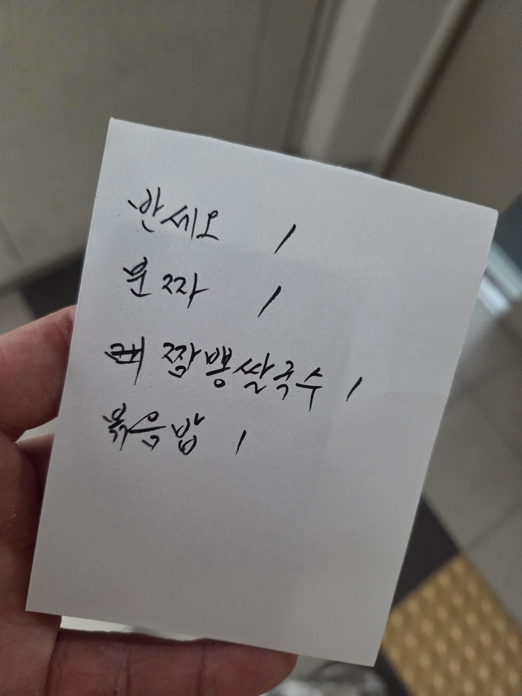

엄마 글씨체

심부름 다녀온다
엄마 글씨체

심부름 다녀온다
상고출신 아저씨들 절대 못이김
글씨체 탐난다
캬 폰트 만들고 싶다
폰트도 저작권 받고 팔 수 있는데 한 번 알아봐봐
나도 어른 글씨체 쓰고싶다
나 중ㄹ학교때 글씨 반에서 제일 못써서 선생님이 끝나고 남아서 펜글씨교본 하루에 한장씩 쓰고가라했는데
진짜 교정이 댐 지금 생각해보면 진짜 그당시 ㅈ같았는데 학창시절 가장 크게 남은것중 하나라 생각
울엄마랑글씨체비슷하네
나도 아빠글씨 절대 못이김
심지어 빠르게 쓰심 난 천천히 신경써서 써도 개발세발인데 ㅋㅋ
짬뽕쌀국수는 뭐야아앗!!
반세오가 뭐야?
반세오(Bánh Xèo)는 쌀가루 반죽을 얇고 바삭하게 부쳐 숙주, 돼지고기, 새우 등의 속 재료를 넣고 반달 모양으로 접어 먹는 베트남식 부침개입니다.
아 그쪽이구나 짬뽕만보고 중국집 메뉴적은건줄암 ㅋㅋㅋ
비트남식 부침개
이야 죽이네
짬뽕쌀국수 존나 궁금하네
붓펜으로 쓴건가?
달필이시네.. 부럽다
개부이 글 보고나니까 분짜 먹고싶어지네
예전에 이태원 경리단길 띤띤이라는 가게가 있었는데
거기 분짜 느억맘 소스가 진짜 기가막혔어
매번 다른 가게에서 분짜 먹을때마다 거기 생각남ㅅㅂ
아직까지 그 맛을 이기는 분짜를 못만났다고
캘리그래피 하면 잘하시겠다.
오 느낌있다
옛날 중국집메뉴판 글씨체